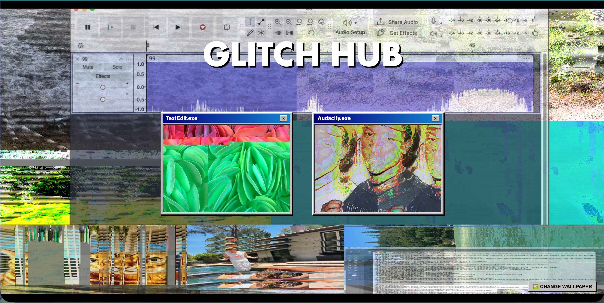
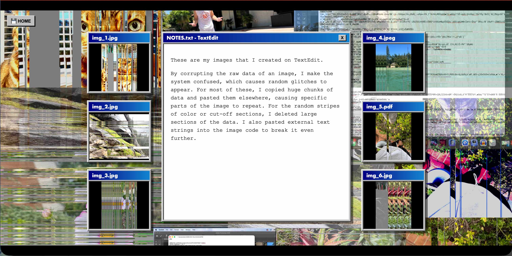
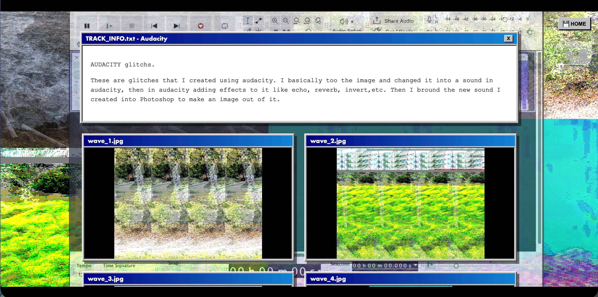

Glitch Hub-Final
System compilation archive of compressed artifacts and broken pixel structures.




PROJECT DESCRIPTION
This This was my final for my digital media class. I made a website portfolio of only glitch art. I took a series of nature images and put those into a few different softwares like TextEdit and Audacity to cause them to appear glitchy.